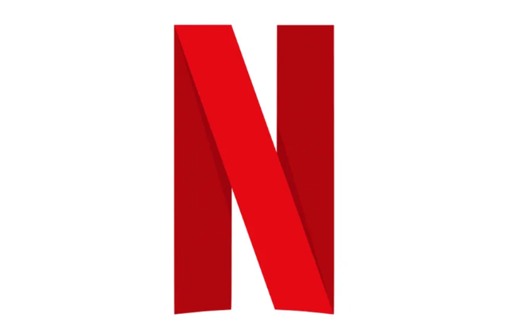
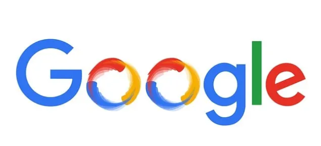
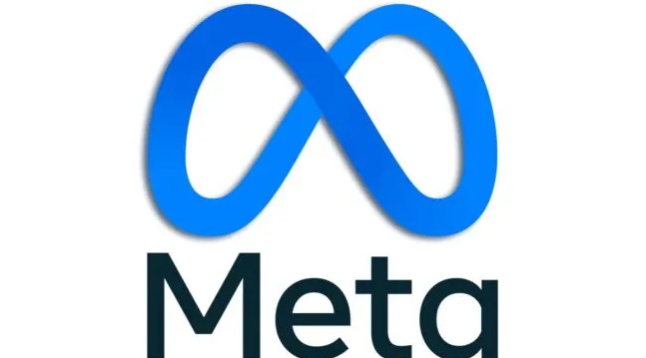

NETFLIX |
GOOGLE |
META |
 Netflix, Inc. is a global streaming entertainment service headquartered in Los Gatos, California, USA. It was founded in 1997 by Reed Hastings and Marc Randolph as a DVD rental-by-mail business. In 2007, Netflix pivoted to online streaming, revolutionizing how people consume media.
📺 What Does Netflix Offer?
Netflix provides:
- Streaming of movies, TV shows, documentaries, and anime
- Original content branded as Netflix Originals (e.g., Stranger Things, The Crown, Squid Game)
- Mobile games through its app, expanding into interactive entertainment
- Personalized recommendations using advanced algorithms based on viewing history
|
Google LLC is an American multinational technology company founded on September 4, 1998 by Larry Page and Sergey Brin while they were PhD students at Stanford University. Originally created as a search engine, Google has evolved into a global powerhouse in online advertising, cloud computing, software, hardware, and artificial intelligence
💡 Innovations & Impact
- Pioneered search engine algorithms like PageRank
- Developed TensorFlow, a leading open-source AI framework
- Invests heavily in quantum computing, sustainability, and digital accessibility
- Runs Google.org, its philanthropic arm focused on global challenges
|
🧠 Origin & Evolution
- Founded: February 2004 as Facebook by Mark Zuckerberg and fellow Harvard students
- Rebranded: In 2021, Facebook Inc. became Meta Platforms Inc. to reflect its shift toward building the metaverse
- Headquarters: Menlo Park, California, USA
🌐 What Meta Does
Meta is a global technology conglomerate focused on:
•Social media
•digital advertising
•Metaverse & VR
|